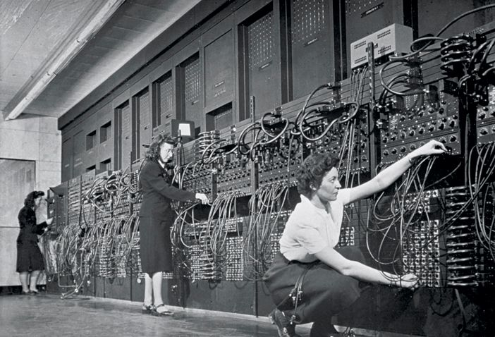

ENIAC
Considerada la primera computadora electrónica de propósito general. Utilizaba más de 18,000 tubos de vacío y consumía enormes cantidades de energía.
- Uso militar y científico
- Tamaño gigantesco
- Programación manual

Cuando las computadoras ocupaban habitaciones, consumían energía como bestias y aún así cambiaron el mundo.
Entre los años 1940 y 1956 surgieron las primeras computadoras electrónicas. Estas máquinas utilizaban tubos de vacío para procesar información, marcando el inicio de la era digital.
Eran costosas, frágiles y difíciles de mantener, pero demostraron algo crucial: una máquina podía calcular más rápido que cualquier humano.
Considerada la primera computadora electrónica de propósito general. Utilizaba más de 18,000 tubos de vacío y consumía enormes cantidades de energía.
La primera computadora comercial. Demostró que la computación podía salir del ámbito militar y entrar al mundo empresarial.

Las computadoras funcionaban, sí. Pero eran ineficientes, inestables y costosas. La humanidad necesitaba algo más pequeño, más rápido y más confiable.
Esa necesidad dio paso a la siguiente revolución: el transistor.